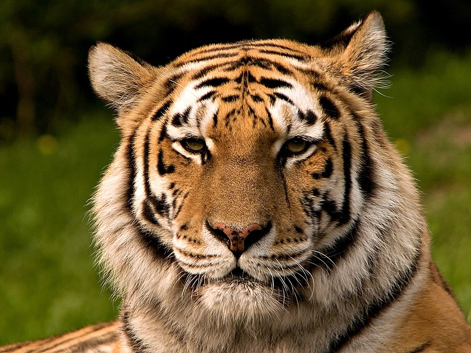

Descripción del Tigre
Los tigres son grandes felinos conocidos por su fuerza y belleza. Son los más grandes de la familia de los felinos y se encuentran principalmente en Asia. Con su icónica pelaje anaranjado y rayas negras, los tigres son cazadores hábiles y se adaptan a diversos hábitats, desde selvas densas hasta pastizales abiertos.
Estos animales son solitarios por naturaleza, prefiriendo cazar y vivir solos en su territorio. Utilizan su aguda visión y sentido del oído para cazar, siendo principalmente nocturnos. Su dieta consiste en una variedad de presas, incluidos ciervos, jabalíes y otros mamíferos de gran tamaño.
Los tigres son expertos nadadores y no temen al agua, a menudo utilizando ríos y estanques para refrescarse o perseguir a su presa. Sus patas poderosas y musculosas les permiten realizar saltos sorprendentes y moverse sigilosamente a través de su entorno.
A pesar de su impresionante tamaño y habilidades de caza, los tigres enfrentan amenazas significativas debido a la pérdida de hábitat y la caza furtiva. La conservación de estos majestuosos animales es crucial para mantener el equilibrio en sus ecosistemas.
